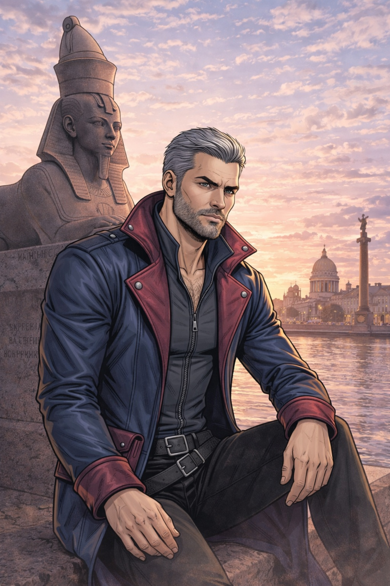

Луис
Луис — сильный, сдержанный и внимательный мужчина, привыкший скрывать свои чувства за внешним спокойствием. В нём сочетаются внутренняя твёрдость, усталость от прошлого и редкая способность по‑настоящему беречь того, кто ему дорог. Встреча с Натальей становится для него не просто романтическим потрясением, а началом глубокого внутреннего преображения.